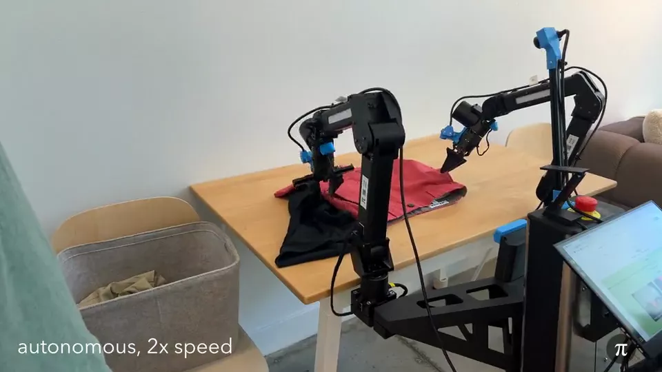
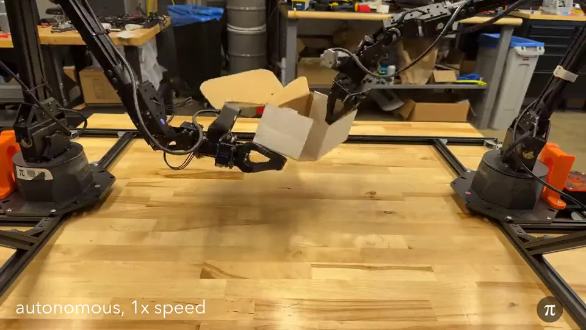
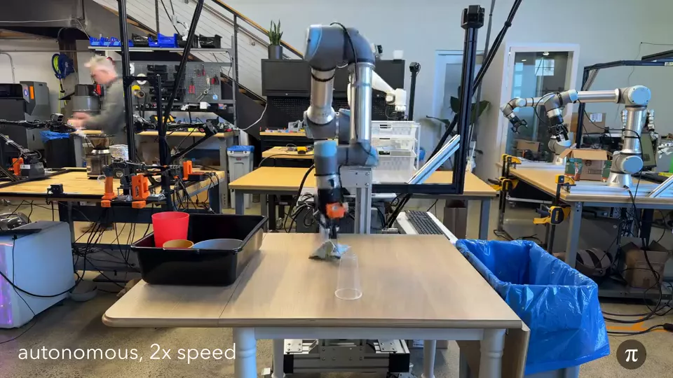
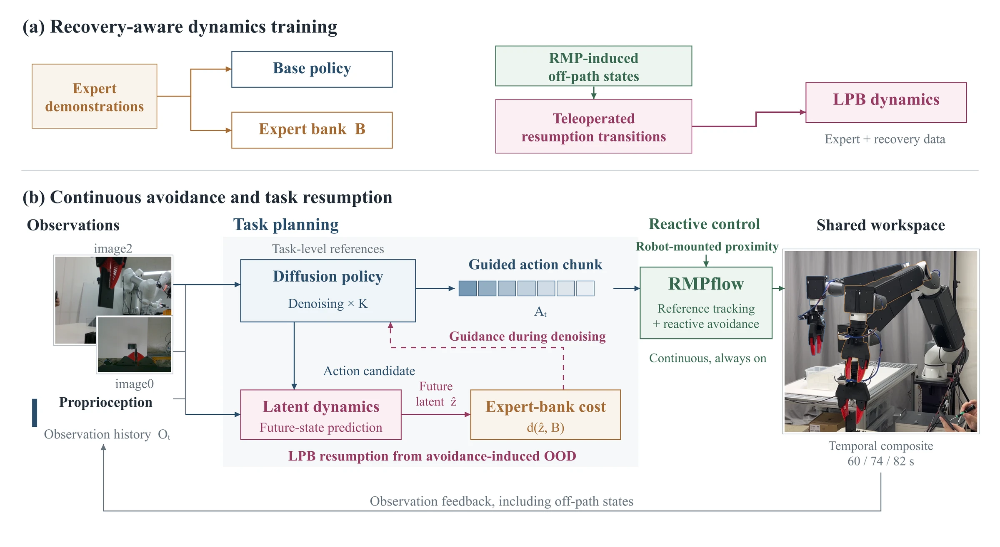

Generate
시각·로봇 상태에서 작업 행동 생성
Task‑oriented Physical AI × proximity safety × latent recovery
Learn the task · React to people · Resume after avoidance
Task‑oriented Physical AI가 시연에서 task를 배우는 데 초점을 둔다면, 이 연구는 사람의 개입 이후에도 그 task를 끝까지 이어가는 문제를 다룹니다. Diffusion Policy의 작업 생성, 근접센서·RMPflow의 즉각적인 회피, LPB의 회피 후 복귀를 하나의 closed loop로 연결해, 사람 곁에서도 작업 맥락을 유지하도록 설계했습니다.
시각·로봇 상태에서 작업 행동 생성
근접센서 기반 실시간 국소 회피
회피 이후 latent 분포로 작업 복귀
Problem
Task competence ≠ interaction robustness
시연 기반 정책은 정해진 분포 안에서 복잡한 manipulation을 수행합니다. 하지만 사람이 접근해 RMPflow가 경로를 바꾸는 순간, 로봇은 시연에 없던 상태로 이동합니다. 문제는 충돌 회피 자체보다 그 다음 action을 어떻게 task 맥락 안에서 이어갈지에 있습니다.
Task competence



참고 이미지 · 본 프로젝트의 실험 결과는 04 Demos에 구분해 제시했습니다.
The missing loop
RMPflow는 충돌을 피할 수 있지만, 회피가 만든 새 상태는 task policy의 학습 분포 밖일 수 있습니다. 안전한 회피와 자연스러운 작업 재개 사이에 recovery가 필요한 이유입니다.
후보 action의 미래 latent를 예측하고, expert reference에 가까워지는 방향으로 denoising을 guide합니다.
System
Frozen policy · Action‑conditioned dynamics · RMPflow
학습된 정책은 작업을 생성하고, LPB는 후보 행동이 만들 미래 상태를 평가하며, RMPflow는 실행 시점의 근접 위험에 반응합니다. 각 모듈의 책임을 분리해 작업 성능과 실시간 안전 제어를 하나의 loop에서 연결했습니다.

Training
Closed‑loop deployment
시각 관측과 로봇 상태에서 작업 목적을 담은 action chunk를 생성합니다.
후보 행동 이후의 latent를 예측하고 expert 분포에 가까워지는 방향을 계산합니다.
로봇 표면의 근접센서로 카메라 가림과 무관하게 가까운 접근에 반응합니다.
LPB Recovery
Latent prediction · OOD cost · Guided denoising
현재 latent와 후보 action chunk로 미래 latent를 예측하고 expert bank와의 거리를 계산합니다. 그 거리의 gradient를 denoising에 반영해, 회피 이후에도 정책이 전문가 시연 분포 가까이에서 다시 작업을 이어가도록 유도합니다.
RGB와 proprioception을 현재 상태 latent로 변환합니다.
후보 action chunk가 만들 미래 latent를 예측합니다.
Expert latent bank와의 거리를 OOD cost로 환산합니다.
Action gradient를 적용해 마지막 denoising 구간을 보정합니다.
재학습 없이 sampling 단계에서만 개입
후보 행동이 만든 미래 상태를 평가
일부 action을 실행한 뒤 새 관측으로 재계획
Validation
Closed‑loop response · Local avoidance · LPB diagnostics
작업 수행 중 사람의 접근, RMPflow의 국소 회피, LPB의 latent/OOD 판단을 실제 실행 타임라인으로 묶었습니다. 외부 동작과 내부 추론이 하나의 closed loop에서 어떻게 이어지는지 확인할 수 있습니다.
01 · Task‑level interaction
02 · Proximity response
03 · LPB diagnostics
Project takeaway